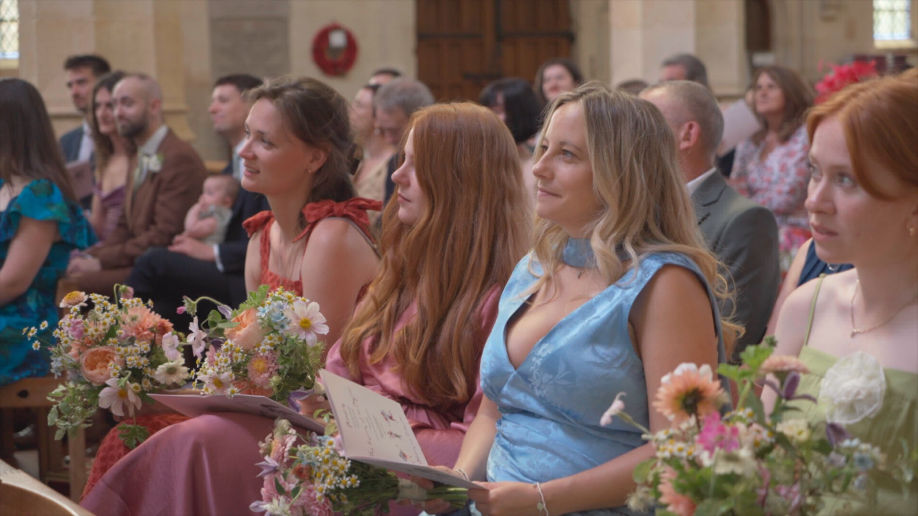
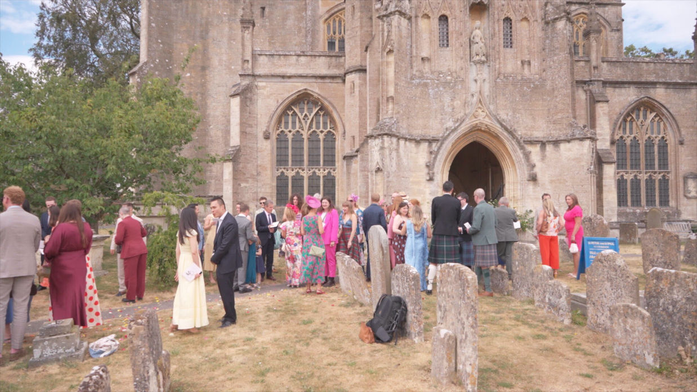
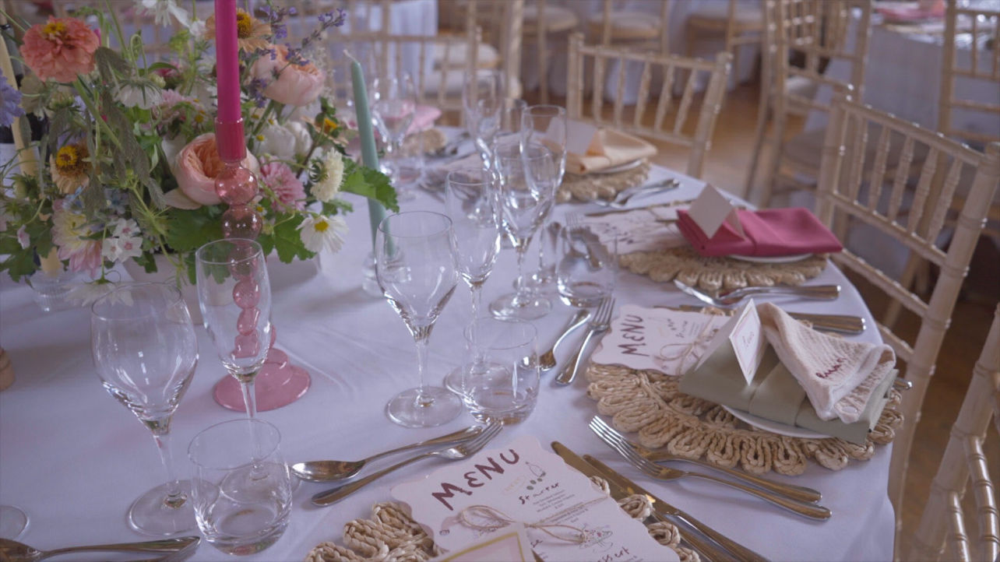
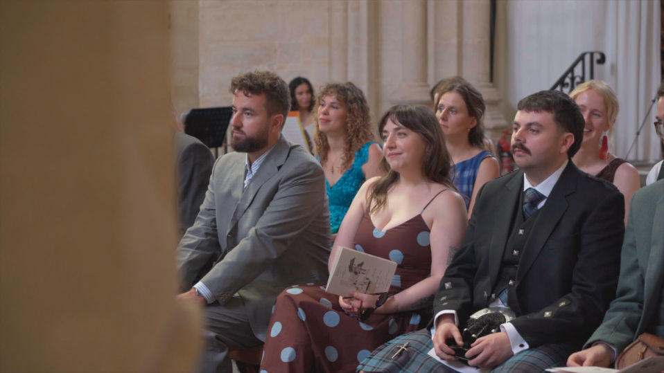
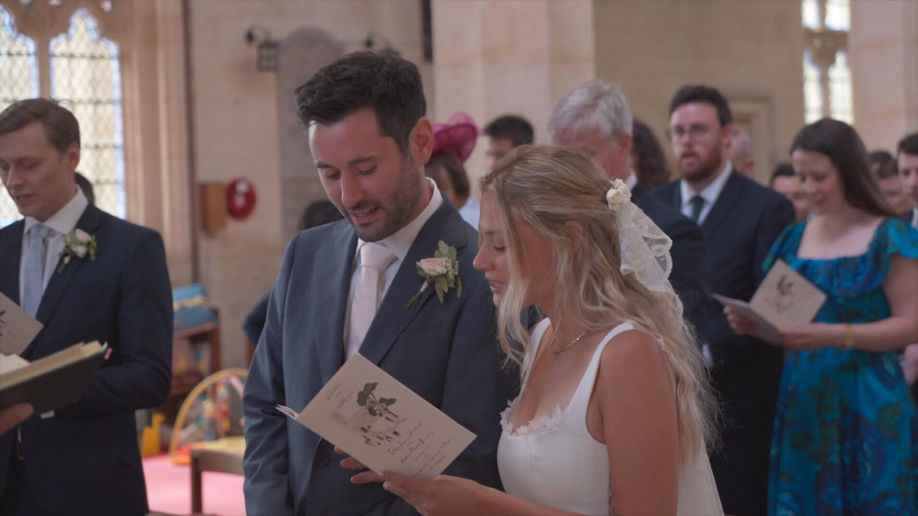
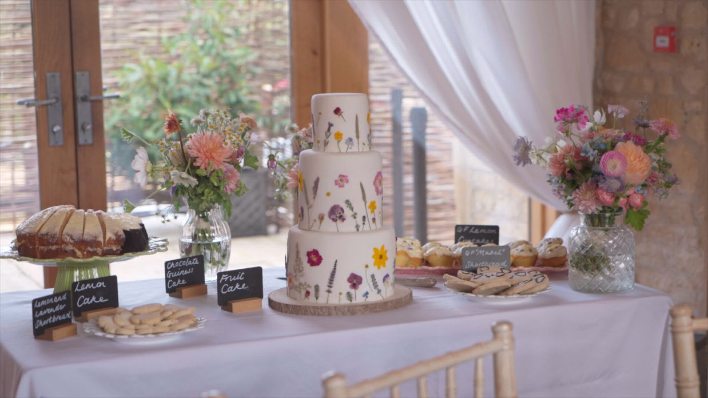
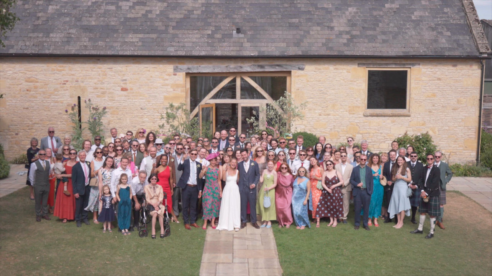
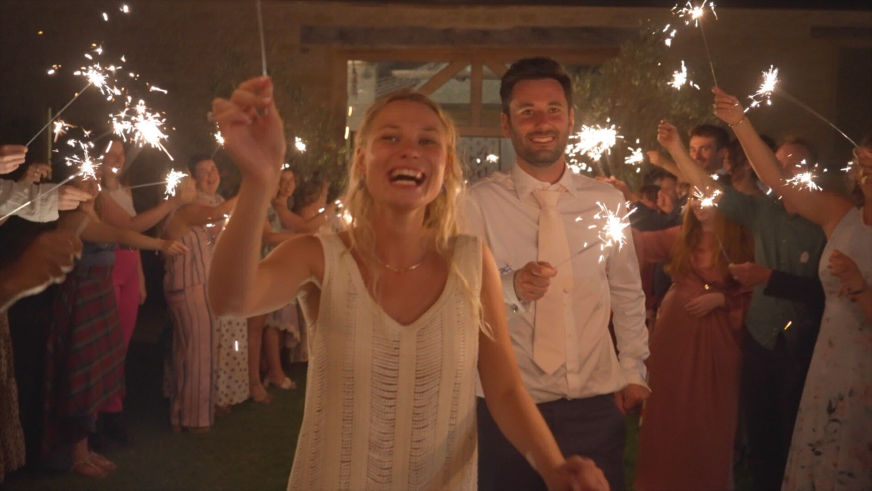

For this beautiful wedding day we headed past the honey coloured villages, bramble hedges and old oaks to The Barn at Upcote in the Cotswolds. Located in Withington, Cheltenham, the venue was perfect for Henry and Isla's music filled, colourful yet relaxed day! Here is a look at what they wanted to capture, how we filmed the day, the results and all the people that helped bring it together!
Isla and Henry definitely didn't want to be forced into awkward poses and were a bit nervous about being the centre of attention on the day! So were happy with our documentary approach, letting everyone forget the cameras were even there, but still capturing all the important moments as well as those natural bits!
They also didn't want the film to focus solely on them and miss the energy of the guests especially as so many people had travelled so far to be there. So we made sure to film the guests having a blast throughout the day.
They didn't want a generic film as their wedding was so personal and thoughtful. We captured all Isla's hand drawn signage and menus as well as the jazz band and the string quartet who were all organised by Henry and mostly his friends as he is also a musician. The speeches were also really lovely and funny so we wanted to capture some of that in the video too, but not going overkill to make it too long and boring!


Getting Ready and The Church
We kept our gear compact, blending into the background to capture the getting ready, excitement and a bit of nerves! It was lovely to have the contrast of the two locations, between the amazing church and then the more relaxed Barn at Upcote. Moving quietly and checking in with the vicar to make sure we knew exactly what was happening when, we also made sure we were in the right place to capture the classic confetti (this one was flower petal) filled exit!
Arriving at Upcote Barn
We focused on the inbetween bits, capturing the little down to earth moments of the guests mingling without interupting them. Plus getting a few group shots of the main family and friends and a shot of all the guests in one frame which was fun! Working smoothly with the photographer, letting them lead so the couple doesn’t feel pulled in two different directions. We used compact sound recorders near the musicians and speeches so there wasn't an ugly mic in the frame. We also flew a discreet drone over the venue, I don't think a single person even noticed it and captured a few more shots with the drone of the beautiful Cotswolds countryside.
The Meal, Dancing and Fireworks
We made sure to get shots of the beautiful flowers, homemade cakes, tables and Isla's hand illustrated menus, decor and signage. As well as making sure to get in the middle of all the celidh dancing fun chaos to capture the energy, rather than just being on the side lines. With our amazing low light cameras we also got some beautiful shots of everyone (slightly drunkly) waving around their sparklers at the very end of the night!
If you would like to see more of our Wedding Video Portfolio you can find it here.


We made a wedding video that doesn't just show what the day looked like, but brings back exactly how it felt. Our editing made sure the story flows naturally and is fun to watch again and again rather than a long boring chronological sequence. Preserving voices, laughs, and the presence of loved ones!
You can find our Wedding Video Packages here.


One of the best parts of working as an Upcote Barn wedding videographer was collaborating with all these amazing people:
Venue: The Barn at Upcote
Catering: Birch Catering
Photography: Emily BD Photo
Florist: The Unwalled Garden
Dress: The Mews Bridal


Whether you are getting married amongst the Cotswolds hills or looking for a videographer in Portugal for your celebration, we would love to tell your story!
You can contact me here: katy@munjiri.com